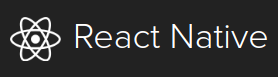
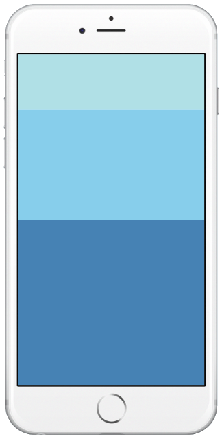

What is React Native?

- React Native: Framework to build cross-platform apps.
- developed by Facebook
- based on React, a JavaScript framework for building web front-ends
- code in JavaScript ("JSX") using a plain text editor (no Android Studio!)
- deploy the same app to Android, iOS, web, and/or desktop (wow)
Installing React Native
- React Native Install Guide (use this page for install)
- install Android Studio and Android 6.0 (Marshmallow)
- may need older versions of Android or Build Tools (23.0.1) from SDK Manager
- install a simple text editor like Atom
- install Node.js (server-side JavaScript framework)
- install React Native from terminal
- create/test an app

Making a simple app

- create a project from command line:
react-native init ProjectName
- edit index.android.js to modify the UI
- launch your AVD emulator
- run the project in the emulator:
cd ProjectName react-native run-android react-native start --reset-cache
Hello, World!
import React, { Component } from 'react';
import { AppRegistry, Text } from 'react-native';
class HelloWorldApp extends Component {
render() {
return (
<Text>Hello world!</Text>
);
}
}
AppRegistry.registerComponent('HelloWorldApp', () => HelloWorldApp);
Anatomy of a React Native app
- code is in ECMAScript 6 (basically JavaScript)
- advanced version of JS w/ classes, imports, etc.
- UI is expressed using JSX
- a way of embedding blobs of XML inside JavaScript code
- used to combine XML layout with Java(Script) event code
<Text>is an example of a React JSX component
React Components
- common: ActivityIndicator Button Image KeyboardAvoidingView ListView MapView Modal Navigator Picker RefreshControl ScrollView Slider StatusBar Switch Text TextInput TouchableHighlight TouchableNativeFeedback TouchableOpacity TouchableWithoutFeedback View WebView
- Android: DrawerLayoutAndroid ProgressBarAndroid ToolbarAndroid ViewPagerAndroid
- iOS: DatePickerIOS NavigatorIOS PickerIOS ProgressViewIOS SegmentedControlIOS SnapshotViewIOS TabBarIOS TabBarIOS.Item
Styles
const styles = StyleSheet.create({
container: {
flex: 1,
justifyContent: 'center',
alignItems: 'center',
backgroundColor: '#F5FCFF',
},
welcome: {
fontSize: 20,
textAlign: 'center',
margin: 10,
},
...
});
- styles are nested JS properties passed to
StyleSheet.create - mirrors CSS properties from web dev
App layout
- FlexBox properties:
flexDirection,alignItems,justifyContent, ...

import React, { Component } from 'react';
import { AppRegistry, View } from 'react-native';
// "flex" system is a lot like Android's "weight"
class FlexDimensionsBasics extends Component {
render() {
return (
<View style={{flex: 1}}>
<View style={{flex: 1,
backgroundColor: 'powderblue'}} />
<View style={{flex: 2,
backgroundColor: 'skyblue'}} />
<View style={{flex: 3,
backgroundColor: 'steelblue'}} />
</View>
);
}
}
AppRegistry.registerComponent('AwesomeProject',
() => FlexDimensionsBasics);
App state
- a React app's appearance is based on its state
- a JS object (map) of key/value pairs
- when state is modified, app appearance immediately updates
- initialize in constructor; modify using
setState
class StudentRegistration extends Component {
constructor(props) {
super(props);
this.state = {
name: "Joe Student",
school: "Stanford University",
id: 1234,
money: 0.00,
};
}
render() {
...
}